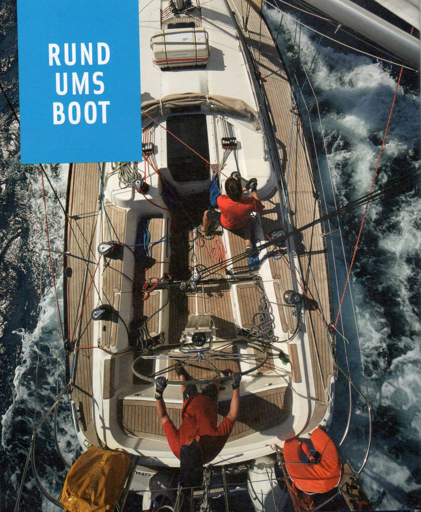
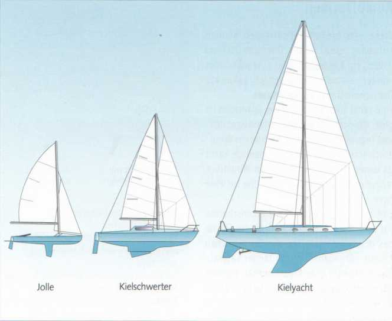
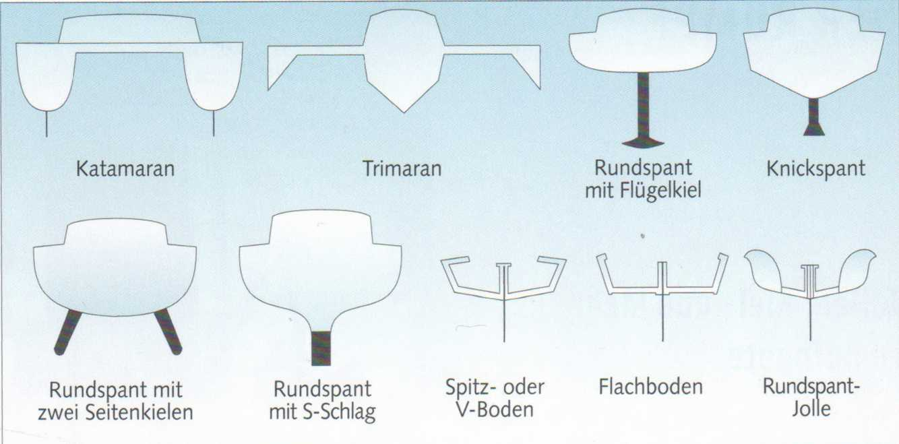
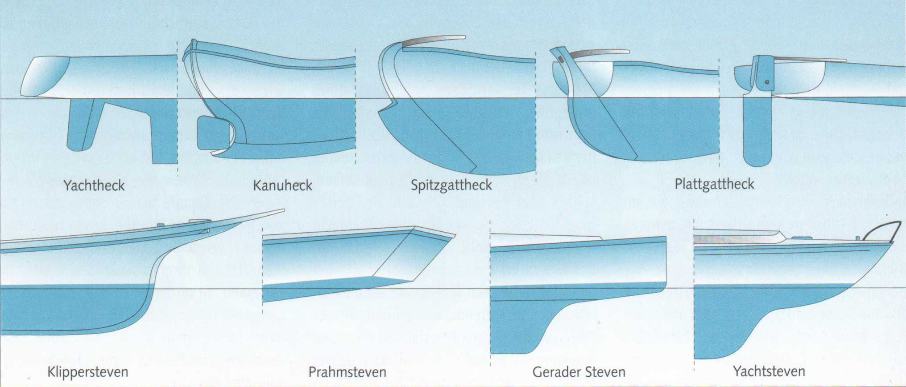
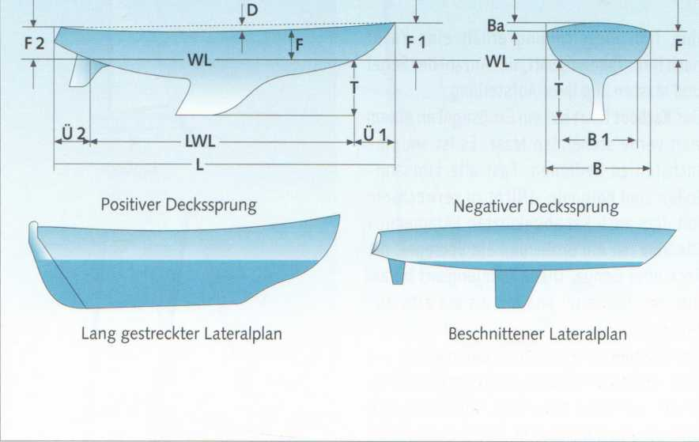

Формы и типы лодок столь же разнообразны, как и их назначение — крейсерская яхта для моря, побережья или внутренних водоёмов, или гоночная яхта. Их классификация и обозначение производятся по определённым характерным признакам.
Прежде всего, по конструкции корпуса можно выделить два основных типа: килевая яхта (Kielboot) и швертбот — швертбот (Jolle).
Швертботы (Jollen) — это открытые мелкосидящие лодки с подъёмной вертикальной пластиной в днище, называемой швертом (Schwert). Он предотвращает боковой дрейф при плавании под парусами. На швертботах удобно подходить к берегу и пляжам. Однако, поскольку они более или менее легко могут опрокинуться (kentern), они не пригодны для открытого моря. Швертботы должны иметь достаточно плавучих элементов или воздушных танков (Lufttanks), которые удерживают залитую водой лодку с экипажем на плаву.
Швертбот-крейсер (Jollenkreuzer) — это более крупные швертботы с каютой. Поскольку они тоже могут опрокинуться, их также не следует использовать на открытом морском акватории.
Килевые яхты (Kielboote) — это, как правило, каютные лодки. Они имеют жёстко закреплённый балластный груз из свинца, чугуна или даже бетона. Если они получают течь и заливаются водой, балластный груз неизбежно тянет их на дно. Зато они не опрокидываются. Даже если сильный порыв ветра накренит их на 90° и прижмёт к воде, или они будут перевёрнуты вверх килем (kieloben) штормом, — благодаря балласту в киле они всегда возвращаются в горизонтальное положение. Это, конечно, относится и к швертботам с килем.
Килевые швертботы (Kielschwerter) сочетают преимущество меньшей осадки — благодаря подъёмному шверту в относительно мелкосидящем киле — с остойчивостью, значительно превосходящей швертбот. Они могут утонуть, но не должны опрокидываться. Меньшая осадка по сравнению с килевой яхтой позволяет заходить на мелководье и облегчает перевозку по суше.
У яхты с подъёмным килем (Hubkieler) киль, за исключением балластной бульбы (Ballastbombe) на конце киля, может убираться в корпус. Она также не опрокидывается и с поднятым килем перевозится даже удобнее, чем килевой швертбот.

Скуловые кили (Kimmkieler), или двухкилевые яхты, были разработаны специально для приливных акваторий. Два боковых киля позволяют лодке оставаться в вертикальном положении при обсыхании.
Многокорпусные суда (Mehrrumpfboote) часто также обозначаются по-английски как мультихаллы (Multihulls). К ним относятся катамараны (Katamarane) или каты (Kats), имеющие два одинаковых по длине корпуса, и тримараны (Trimarane) с тремя корпусами. Два более коротких боковых корпуса служат лишь стабилизирующими аутригерами. Корпуса обоих типов соединены между собой мостовой конструкцией. Свою высокую остойчивость они получают благодаря большой ширине. Однако в экстремальных ситуациях они — как и швертботы — могут опрокинуться. Катамараны существуют как крейсерские лодки с каютными надстройками, так и как небольшие пляжные каты (Strandkats) с трамплинной палубой между корпусами.
Эти различные типы лодок могут иметь либо округлую форму шпангоута — круглоскулый шпангоут (Rundspant), либо более или менее, однократно или многократно ломаную форму — скуловой шпангоут (Knickspant).
Яхта с узкой формой шпангоутов является валкой (rank). Она имеет малую начальную остойчивость и при слабом ветровом давлении уже сильно кренится. Яхта с полными шпангоутами, напротив, является остойчивой (steif). Она дольше и лучше противостоит ветровому давлению. Она имеет высокую начальную остойчивость.
На мореходные и парусные свойства влияет также латеральный план (Lateralplan). Это площадь подводной части корпуса, противодействующая боковому дрейфу. Длинный латеральный план обеспечивает хорошую курсовую устойчивость, но и создаёт — из-за большой площади — более высокое сопротивление трения в воде.
Такая лодка будет относительно медленной, но устойчивой на курсе. Чем короче или «урезаннее» латеральный план, тем меньше сопротивление трения. Соответственно, яхта будет ходить быстрее, но и управлять ею будет сложнее.

Катамаран (Katamaran) (двухкорпусная лодка) с круглоскулыми корпусами. У спортивных катамаранов корпуса соединены только траверсами и трамплинной палубой. На крейсерских катамаранах каюта расположена на мостовой конструкции.
Тримаран (Trimaran) (трёхкорпусная лодка) с V-образными шпангоутами. Каюта находится в центральном корпусе.
Круглоскулый корпус (Rundspanter), экстремально плоский, с приставным килем. Тип классической крейсерской яхты.
Скуловой корпус (Knickspantrumpf) с приставным каплевидным или бульбовым килем (Wulst- oder Bulbkiel). Характерен для небольших стальных яхт.
Круглоскулый корпус (Rundspanter) с тупо приставленными двойными килями.
Круглоскулый корпус (Rundspanter) с так называемым S-образным сечением и интегрированным крыловидным килем (Flügelkiel), тип современной быстрой яхты.
Скуловой швертбот (Knickspant-Jolle) с острым или V-образным днищем.
Скуловой швертбот (Knickspant-Jolle) с плоским днищем.
Круглоскулый швертбот (Rundspant-Jolle), U-образный, с воздушными танками.

Оконечности судна обозначаются как нос (Bug) (спереди) и корма (Heck) (сзади). Они оказывают значительное влияние на мореходные качества яхты. Умеренные свесы (Überhänge) в носу и корме обеспечивают дополнительный запас плавучести, предотвращающий зарывание яхты в волну на бурном море.
Слишком длинные закруглённые свесы, напротив, приводят к резкой килевой качке (Stampfbewegungen) на волнении, утомляющей и материал, и экипаж. Лодка с узким острым носом склонна к зарыванию и идёт довольно «мокро».
Для коротких крутых волн, как на внутренних озёрах, наиболее подходит прямой штевень (gerader Steven).
Яхтенная корма (Yachtheck) с наклонённым внутрь транцем (einfallender Spiegel). Если транец наклонён наружу, говорят о «выступающем транце» (ausfallender Spiegel).
Каноэ-корма (Kanuheck). Более старая форма кормы. Поскольку нос обычно имеет схожую форму, такую лодку также называют двухоконечником (Doppelender).
Корма типа «шпицгатт» (Spitzgattheck), по которой такие лодки также называют шпицгаттерами (Spitzgatter). Преимущество перед каноэ-кормой: руль, установленный снаружи, при повреждениях более доступен.
Плоская или транцевая корма (Plattgatt- oder Spiegelheck), как у большинства швертботов. На килевых яхтах встречается уже редко.
Штевнем (Steven) называют как передний завершающий элемент носа, так и деталь, соединяющую киль с транцем. Соответственно различают форштевень (Vorsteven) и ахтерштевень (Achtersteven). Этот термин также используется для обозначения различных форм носа. Все штевни сужаются спереди. Единственное исключение: прамовый штевень (Prahmsteven). Он имеет транец и спереди.
Лодка плавает на своей ватерлинии (Wasserlinie, WL). Она обычно незначительно отклоняется от рассчитанной конструктором конструктивной ватерлинии (Konstruktionswasserlinie, CWL), поскольку зависит от различной загрузки яхты. Ватерлиния разделяет надводную (Überwasserschiff) и подводную часть (Unterwasserschiff). Длина по ватерлинии (Länge Wasserlinie, LWL) определяет максимальную скорость, которую может развить судно. Наибольшая ширина (Breite über alles, Büa) соответствует самому широкому месту корпуса.
Если надводный борт (Freibord) наименьший посередине, то есть оконечности лодки слегка приподняты, говорят о положительном седловатости палубы (positiver Deckssprung). Это обычно является нормой. Однако у некоторых лодок бывает и отрицательная седловатость (negativer Sprung): надводный борт выше посередине и снижается к оконечностям.
Поперечную выпуклость палубы называют погибью бимса (Decksbalkenbucht).
Яхта без надстроек называется гладкопалубной (Glatt- oder Flushdecker).

|
L |
Наибольшая длина (Länge über alles, Lüa) |
F |
Надводный борт (Freibord) |
|
WL |
Ватерлиния (Wasserlinie, CWL) |
Fl |
Надводный борт в носу (Freibord vorn) |
|
LWL |
Длина по ватерлинии (Länge der Wasserlinie) |
F2 |
Надводный борт в корме (Freibord achtern) |
|
T |
Осадка (Tiefgang) |
B |
Наибольшая ширина (Breite über alles, Büa) |
|
Ü1 |
Свес в носу (Überhang vorn) |
B 1 |
Ширина по ватерлинии (Breite in der Wasserlinie, BWL) |
|
Ü2 |
Свес в корме (Überhang achtern) |
Ba |
Погибь бимса (Balkenbucht) |
|
D |
Седловатость палубы (Deckssprung) |